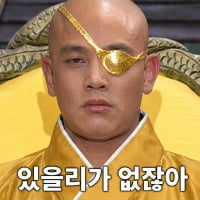

https://x.com/tjcope/status/2104288016739287172
현재 펼쳐지고 있는 북중미 네이션스 리그의 영국령 앵귈라 대 앤티가 바부다의 경기에서 앵귈라의 에이단 스키피오가 68분에 교체 투입. 이 선수는 세계에서 가장 긴 머리카락을 가진 축구 선수인데 머리카락 덕분에 바부다의 2명이 퇴장당함.
https://x.com/tjcope/status/2104288016739287172
현재 펼쳐지고 있는 북중미 네이션스 리그의 영국령 앵귈라 대 앤티가 바부다의 경기에서 앵귈라의 에이단 스키피오가 68분에 교체 투입. 이 선수는 세계에서 가장 긴 머리카락을 가진 축구 선수인데 머리카락 덕분에 바부다의 2명이 퇴장당함.
ㅋㅋㅋㅋㅋㅋㅋㅋㅋㅋ
보통 옷을 잡아당기는데 그러다가 머리가 같이 잡히는듯 ㅋㅋㅋㅋ
이정도면 전술적으로 장발선수 하나쯤 챙길만한데 ㅋㅋㅋㅋ
안정환 투입
ㅋㅋㅋ 노린거냐.. ㅋㅋㅋ
개쩐다
저정도면 머리카락 무게로 인한 페널티를 상쇄하고도 남네 ㅋㅋ
ㅋㅋㅋㅋㅋㅋㅋㅋㅋㅋㅋㅋㅋㅋ
손이가요 손이가~~

ㅋㅋㅋㅋㅋ
저건 묶으라고 해야 될거 같은데
옷 잡는 정도 몸싸움도 머리채가 잡히네 ㅋㅋㅋㅋㅋㅋ
ㅋㅋㅋㅋ묶어서 포니테일이잖아
시발 뭔 올스타전임? 저게 말이 됨??
규정이 없나봐
손잡이가 너무 탐스럽자너 ㅋㅋㅋㅋ
좋은전략이야
목밴드는 유행했다가 몸싸움중에 자꾸 땡겨서 부상때문에 없어졌는데 머리카락은 규제를 못하나?ㅋㅋㅋ
묶어도 저 정도인데 풀었으면 축구1에서는 몸싸움 1황이겠다
솔직히 노린거 맞을듯 ㅋㅋ
머리도 존나안감아서 냄새 ㅈ되게만들면 90분중 좆같아서 한번은 떙기겟다ㅋㅋㅋ
프로토스 아님?
등쪽은 못 건드리네ㅋㅋㅋ